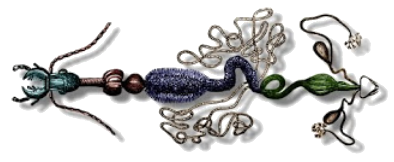

Tema 8. Aparatos digestivo y excretor

• El tubo digestivo
• Estomodeo
• Intestino medio
• Proctodeo
• Tubos de Malpigi
• Nefrocitos
• Otros órganos de la excreción
Capítulo 13. El aparato digestivo (texto)
Capítulo 14. Órganos de la excreción (texto)
Presentación. Aparatos digestivo y excretor
Horario
Lunes: 11:00 a 12:30
Miércoles: 12:30 a 15:00
Programa analítico
Bibliografía
para el curso
Morfología de Insectos